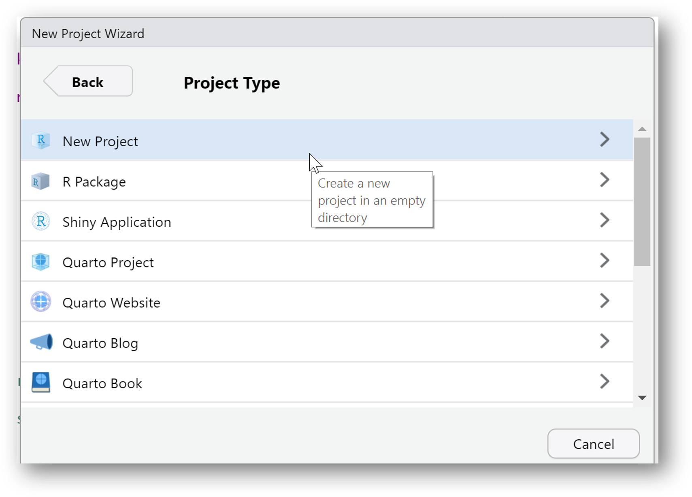
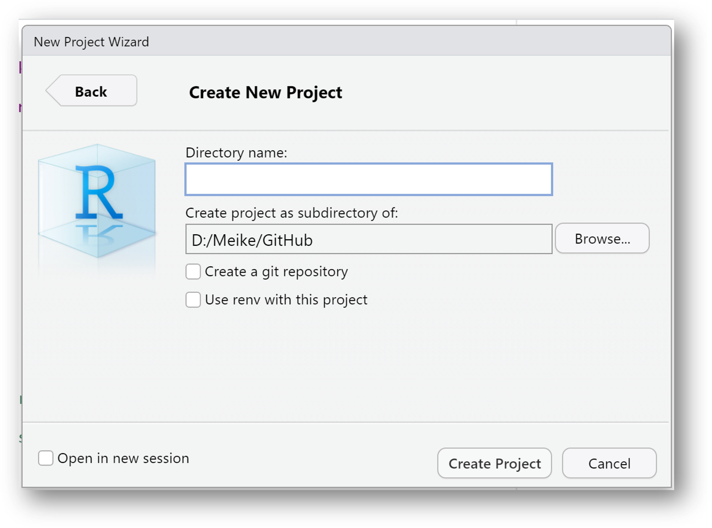

R und RStudio Installation

1. R Installation
allgemein unter: https://cran.rstudio.com/
für Windows: https://cran.rstudio.org/bin/windows/base/
für macOS: https://cran.r-project.org/bin/macosx/

2. RStudio Installation
Übungen
Aufgabe:
Installiere R und RStudio auf deinem Rechner.
Öffne Rstudio, um zu prüfen, ob die Installation erfolgreich war.
RStudio Einstieg
Kapitel
Console
Environment
Files
R
Skripte
RStudio ist eine sogenannte integrated development environment (IDE), also eine Entwicklungsumgebung für die Programmiersprache R. Grundsätzlich sind auch andere IDEs möglich, wir werden in diesem Tutorial jedoch immer davon ausgehen, dass RStudio verwendet wird.
Nachdem RStudio geöffnet wird, sieht es so aus:

Aktuell haben wir noch kein Dokument geöffnet. Wir sehen aktuell 3 separierte Bereiche bzw. Fenster.
Console

In der Console können R Befehle direkt ausgeführt werden. Dies ist praktisch für kleine Taschenrechner-Befehle oder kleine Tests. Der Nachteil ist jedoch, dass die R Befehle nicht gespeichert werden können. Dafür wird ein R Skript benötigt.

Environment

Das Environment ist zu Beginn einer R Session leer. Wenn wir jedoch Variablen speichern oder Datensätze einladen, werden diese Objekte hier angezeigt.

Files

Je nachdem, wo die working directory gesetzt ist, werden hier unterschiedliche Dokumente und Ordner angezeigt.
R Skripte
Wenn ein R Skript geöffnet wird, wird ein weiteres Fenster für das Skript angezeigt. In einem R Skript kann Code abgespeichert werden.
Übungen
Öffne RStudio.
Tippe in die Console eine einfache Rechenaufgaben und drücke “Enter”, um dir das Ergebnis anzeigen zu lassen.
Tippe
"Hallo Welt"(mit den Anhührunsgzeichen) in die Console und drücke auf “Enter”.
R Skript
Kommentare
Grundsätzlich wird jeder Befehl und jedes Zeichen als R Code
verstanden. Wenn man einen Kommentar schreiben möchte, muss man in jeder
Zeile eine # davor setzen.
Code wird ausgeführt, indem der gewünschte Bereich markiert und dann auf den Run-Button geklickt wird. Es kann hier der gesamte Code markiert werden, aber auch einzelne Zeilen oder sogar nur einzelne Befehle.

Die Tastenkombination für Run ist unter Windows
Str + Enter und unter macOS Cmd + Enter.
Neues R Skript öffnen
Ein neues, leeres R Skript wird über diesen Button geöffnet:

Man erhält eine große Anzahl an möglichen Formaten, unter anderem auch ein R Skript.

Das neu geöffnete R Skript sieht nun so aus und kann direkt mit dem Disketten-Symbol abgespeichert werden.

Übungen
Erstelle ein neues R-Skript und speichere es in einem Ordner ab.
Schreibe einen Kommentar in das R-Skript.
Schreibe eine einfache Rechenoperation in das R-Skript.
Schreibe
print("hallo Welt!")in das R-Skript.Führe das R Skript aus und schaue Dir den Output in der Console an.
RStudio vs otter
Die otter Tutorials sind alle interaktiv gestaltet.
Damit wir dir Feedback geben können und du nicht immer zwischen RStudio
und unserer Website wechseln musst, sind R-Bausteine eingebaut. Siehe
dir die folgenden Bilder und Aufgaben an, um zu verstehen, wie in
unseren Tutorials R eingebaut ist.

Übungen
So sieht derselbe R Code in unserem Tutorial-Format aus:
5*5
# Dies ist ein Kommentar
print("Hallo Welt!")Versuche Dich nun selbst!
Aufgabe: Berechne 84 * 15. Gebe dazu die Berechnung in den R Code Bereich ein und klicke auf “Code ausführen”Datentypen
Kapitel
Kurze Zusammenfasssung
Logical
Integer
Double
Character
Viel Nichts in R
Infektiöse fehlende Werte
Hilfreiche Funktionen
Kurze Zusammenfasssung
- Logical: TRUE, FALSE
- Integer: Ganze Zahlen (Platz speichernd)
- Double: Kommazahlen
- Character: Buchstaben
Logical
Werte: TRUE (entspricht 1) und FALSE
(entspricht 0)
Kann aufsummiert werden:
TRUE + TRUE
FALSE + FALSE
TRUE + FALSE Logische Operatoren können angewandt werden
FALSE & TRUE
FALSE | TRUE
5 < 10Logische Operatoren
| Symbol | Bedeutung |
|---|---|
< |
kleiner als |
> |
größer als |
== |
gleich |
!= |
ungleich |
| |
oder |
& |
und |
! |
Negierung |
Mit logischen Operatoren können logische Prüfungen auf Objekte
(Variablen, Vektoren, Datensätze, …) angewandt werden. Als Ergebnis wird
immer der Datentyp logical ausgegeben.
buchstaben <- c("A", "B", "C", "D", "C")
zahlen <- c(18, 22, 16, 20)
# Welche Buchstaben sind C?
buchstaben == "C"
# Welche Zahl ist größer als 20?
zahlen > 20Übungen
Vorbereitung:
namen <- c("Lisa Müller", "Peter Bauer", "Hannah Schmidt")
angemeldet <- c(TRUE, FALSE, TRUE)
alter <- c(18, 22, 16)Aufgabe: Beantworte die gestellte Frage mit R Code.
# Wer von den Personen heißt NICHT Lisa Müller?# namen ____ "Lisa Müller"# !=# Wer von den Personen heißt NICHT Lisa Müller?
namen != "Lisa Müller"# Wer von den Personen ist jünger als 18 Jahre?# Wer von den Personen heißt NICHT Lisa Müller?
alter < 18Integer
integer-Zahlen sind Ganzzahlen in R. Sie sind
platzsparender als double-Zahlen, da Kommas ausgeschlossen
sind. R geht zuerst immer davon aus, dass es sich um
double-Zahlen handelt, somit müssen
integer-Zahlen explizit definiert werden.
Hier gibt es zwei Möglichkeiten:
- L muss direkt dahinter gesetzt werden, z.B.
2L :ermöglicht schnell eine Folge aninteger-Zahlen zu generieren, z. B.1:3erzeugt die Zahlen von 1 bis 3 in Einer-Schritten
1L
1:10
10:1Mit der Funktion is.integer() können wir prüfen, ob es
sich um integer-Zahlen handelt oder nicht.
is.integer(1)
is.integer(1L)Double
double-Zahlen sind sogenannte Gleitkommazahlen. Diese
Zahlentypen werden für normale Berechnungen verwendet
- Kommazahlen
- Sonderfälle
InfPositive Unendlichkeit-InfNegative UnendlichkeitNaNNot a Number (Fehlender Wert im Datensatz)
8/5
4.44 + 2.1Mit der Funktion typeof() können wir abfragen, um
welchen Datentyp es sich handelt.
typeof(5)Übungen
5:1278? Nutze zur Beantwortung der Frage eine
Funktion.
typeof(78)1/0Character
Text, Symbole oder auch Farben werden im Datentyp
character gespeichert.
Text muss in "" gesetzt werden.
"Hallo Welt"shiny::icon("rocket")
shiny::icon("star")Oder auch für Hexcode, um Farben zu definieren.
scales::show_col(c("#044a85", "#e28743", "#1F98B44D", "#1F98BC"))Übungen
"Hallo liebe R-Freunde""heart".
shiny::icon("plus")shiny::icon("heart")Viel Nichts in R
In R gibt es viele Möglichkeiten, um auszudrücken, dass etwas nicht vorhanden ist. Alle Formen von “Nichts” haben eine leicht andere Bedeutung und werden in unterschiedlichen Fällen verwendet oder produziert.
Hier eine (nicht vollständige) Übersicht:
NaN: Not a Number (Länge ist 1). Wird verwendet bei invaliden Rechenoperationen.NA: Not Available (Länge ist 1). Wird klassisch für fehlende Werte verwendet.NULL: Repräsentiert das Null-Objekt in R (Länge ist Null). Wird z. B. in Funktionen verwendet für default Argumente.logical(0): Einlogical-Wert der Länge Null.integer(0): Eineinteger-Zahl der Länge Null.double(0): Einedouble-Zahl der Länge Null.
All diese Werte stellen „nichts” oder „fehlend” dar.
Die Länge dieser Werte unterscheidet sich, so sind manche 0 und andere 1.
length(NaN)
length(NA)
length(NULL)
length(integer(0))
length(double(0))Bei Berechnungen oder anderen Operationen kann es leicht passieren, dass sich fehlende Werte einschleichen.
Beispiele für die Erzeugung vonNaN durch eine
Rechenoperation:
0/0NA tritt meistens auf, wenn ein Datensatz oder eine
Variable einen fehlenden Wert enthält. Es ist üblich eine solche
fehlende Information mit NA zu speichern.
alter <- c(21, 18, NA, 33, 67, NA)Infektiöse fehlende Werte
Fehlende Werte wie NaN sind manchmal infektiös!
Bei Rechenoperationen führt z. B. ein NaN dazu, dass das
Ergebnis auch ein fehlender Wert ist.
# Eine Variable wird absichtlich oder unabsichtlich zu NaN
variable <- NaN
# Weitere Berechnungen führen auch dazu, dass das Ergebnis zu einem fehlenden Wert wird
variable * 10
# Auch eine logischer Vergleich mit NaN führt hier zu einem fehlenden Wert!
variable == NaNNaN kann nicht mit == geprüft
werden! Es muss mit is.na() geprüft werden.
variable <- NaN
variable == NaN # -> erzeugt NA
is.na(variable) #- > gibt einen logischen Wert ausNur der | (oder) Operationen kann auch einen fehlenden
Wert bearbeiten, ohne dass daraus ein fehlender Wert wird.
variable <- NaN
variable | TRUEÜbungen
variable einen fehlenden Wert enthält. Korrigiere
dazu den Fehler im Code.
variable <- 0/0
variable == NaNvariable <- 0/0
is.na(variable)Hilfreiche Funktionen
Erstellen von “Platzhalter-Variablen” eines bestimmten Datentyps:
integer(5)
double(5)
character(5)
logical(5)Prüfungen, welcher Datentyp vorliegt:
# Erzeugung einer Variable
number = 5
# Prüfung der Variable
is.integer(number)
is.double(number)
is.character(number)
is.logical(number)
is.numeric(number)# Erzeugung einer Variable
number = 5
# Prüfung von Spezialfällen
is.na(number)
is.finite(number)
is.infinite(number)Datentyp ändern:
# Erzeugung einer Variable
number = 0
# Änderung des Datentyps
as.numeric(number)
as.integer(number)
as.double(number)
as.character(number) # -> Zahl wird in einen Text verwandelt
as.logical(number) # -> 0 wird zu FALSEÜbungen
Datenstrukturen
Variablen
Variablen sind Container für Daten. Sie zeigen auf ein Objekt im Speicher. Sie müssen ausgeführt werden, um erstellt und genutzt werden zu können. Nach Erstellung taucht die Variable im Environment auf.
Eine Variable kann verschiedene Inhalte enthalten, z. B. eine Zahl, Buchstaben, Matrizen oder Listen.
Der Inhalt einer Variable kann auf die Console geschrieben werden, wenn der Variablenname ausgeführt wird.
name <- "Lara"
name
weiblich <- TRUE
weiblich
lieblingszahl <- 3
lieblingszahl
alter <- NULL
alterIn RStudio ist nach dem Ausführen dieses Codes im Environment Folgendes zu sehen:
Mit Operatoren können Variablen Inhalte zugewiesen werden. In R gibt
es hierfür zwei Zuweisungsoperatoren: <- und
=. Wobei es als guter Stil gilt, einheitlich
<- zu verwenden.
pfeil_beispiel <- "Pfeil"
pfeil_beispiel
gleich_beispiel = "Gleich"
gleich_beispielDer Inhalt von einer Variable kann jederzeit geändert werden. Neue Daten können mit dem Zuweisungsoperator zugewiesen werden. Dadurch werden die alten Daten überschrieben.
# Alte Daten
freunde <- 1:5
freunde
# Neue Daten Variante 1 (anderer Datentyp)
freunde <- c("Lisa", "Thorben", "Mara")
freunde# Alte Daten
freunde <- c("Lisa", "Thorben", "Mara")
freunde
# Neue Daten Variante 2 (einzelne Daten ändern)
freunde[2] <- "XXXX"
freunde
# Neue Daten Variante 3 (einzelne Daten ändern)
freunde[c(FALSE, TRUE, TRUE)] <- ""
freundeDaten können auch nachträglich gelöscht werden:
# Entferne den Inhalt an Position 2
freunde <- c("Lisa", "Thorben", "Mara")
freunde <- freunde[-2]
freunde# Entferne den Inhalt "Thorben"
freunde <- c("Thorben", "Lisa", "Thorben", "Mara", "Thorben")
freunde <- freunde[!freunde == "Thorben"]
freundeÜbungen
variable <- c("Baum", "Blume", "Haus", "Pferd")
variableAtomare Vektoren
Atomare Vektoren können mehrere Informationen desselben Datentyps enthalten.
- Werden mit
c()erstellt (c = combine) - Skalare: Vektoren mit nur einer Position
- „Klassische Vektoren”: Vektoren mit mehr als einer Position
- Zugriff erfolgt mit Klammern
[]und Nummer der Position oder einem Vektor mitTRUEundFALSEWerten.
[]
namen_freunde = c("Lisa", "Thorben", "Mara")
lieblingszahlen_freunde = c(1, 7, 8)
weiblich_freunde = c(TRUE, FALSE, TRUE)
# Zugriff erfolgt mit []
namen_freunde[2]
lieblingszahlen_freunde[2]
weiblich_freunde[c(2, 3)]Beispiel: Zugriff mit
TRUE und FALSE
namen_freunde = c("Lisa", "Thorben", "Mara")
namen_freunde[c(TRUE, TRUE, TRUE)]
namen_freunde[c(TRUE, FALSE, FALSE)]Übungen
Hund.
blumen <- c("Tulpen", "Rosen", "Hund", "Sonnenblumen", "Hund")blumen <- c("Tulpen", "Rosen", "Hund", "Sonnenblumen", "Hund")
blumen <- blumen[ !blumen == "Hund"]
blumenHund durch
NA.
blumen <- c("Tulpen", "Rosen", "Hund", "Sonnenblumen", "Hund")blumen <- c("Tulpen", "Rosen", "Hund", "Sonnenblumen", "Hund")
blumen[ blumen == "Hund"] <- NA
blumenVektorisierte Berechnungen
Die Berechnungen in R erfolgen vektorisiert. Dies erlaubt effizienteres und leichteres Programmieren bei Rechenoperationen.
Beispiel: Multiplikation eines Vektors mit einem Skalar
# Jede Zahl im Vektor wird hier automatisch mit 5 multipliziert
c(1, 2, 3, 4) * 5Beispiel: Addition zweier Vektoren
# Die Zahlen auf denselben Positionen werden mit einender addiert
zahlen_1 <- c(0, 0, 1, 1)
zahlen_2 <- c(1, 2, 3, 4)
zahlen_1 + zahlen_2Beispiel: Logische Operatoren
# Alle Zahlen werden mit dem logischen Operator geprüft
zahlen <- c(0, 1, 2, 3)
zahlen < 2Übungen
zahlen <- 1:100zahlen <- 1:100
zahlen + 3zahlen <- 1:100zahlen <- 1:100
zahlen * 5nummer_1 <- 1:100
nummer_2 <- 100:1nummer_1 <- 1:100
nummer_2 <- 100:1
nummer_1 * nummer_2Faktoren
Faktoren repräsentieren kategoriale Daten mit endlichen Ausprägungen, z. B. Tage, Monate im Jahr oder Geschlecht. Damit mit diesen Daten gut gerechnet werden kann in R, werden sie mit Faktoren abgebildet.
Dadurch können kategoriale Daten geordnet werden (hilfreich bei Tagen oder Monaten) oder auch in Zahlen kodierte Daten können inhaltlich sinnvoll abgebildet werden (hilfreich für statistische Auswertungen und Grafiken).
Beispiel: Geschlecht (Daten sind als Zahlen kodiert):
# Die Daten sind hier kodiert mit Zahlen
daten <- c(1,2,3,1,2,1,1,1,1)
# Erstellung eines Faktors
geschlecht <- factor(
daten,
# alle möglichen Kategorien (müssen nicht alle vorhanden sein in den Daten)
levels = c(1, 2, 3, 4),
# Namen zugeordnet zu den levels - > für was steht die Zahl 1?
labels = c("weiblich", "männlich", "divers", "unbekannt")
)
geschlechtBeispiel: Tage (Daten sind als Text kodiert):
# Die Daten sind hier kodiert als Text
daten <- c("Sonntag", "Montag", "Freitag")
# Erstellung eines Faktors
tage <- factor(
daten,
# alle möglichen Kategorien (müssen nicht alle vorhanden sein in den Daten)
levels = c("Montag", "Dienstag", "Mittwoch", "Donnerstag", "Freitag", "Samstag", "Sonntag")
)
# Daten ungeordnet
tageBeispiel: Faktor vs character Vektor
daten <- c("Sonntag", "Montag", "Freitag")
# Daten werden nach dem Alphabet geordnet
sort(daten)
tage <- factor(
daten,
levels = c("Montag", "Dienstag", "Mittwoch", "Donnerstag", "Freitag", "Samstag", "Sonntag")
)
# Daten werden nach der Reihenfolge der angegebenen levels geordnet
sort(tage)Übungen
var_monate. Sortiere danach die
Monate innerhalb dieser Variable.
# Nutze diese Variablen, um den Faktor zu erstellen
monate <- c("Januar", "Februar", "März", "April", "Mai", "Juni",
"Juli", "August", "September", "Oktober", "November", "Dezember")
var_monate <- c("Juli", "Mai", "Januar", "November")monate <- c("Januar", "Februar", "März", "April", "Mai", "Juni",
"Juli", "August", "September", "Oktober", "November", "Dezember")
var_monate <- c("Juli", "Mai", "Januar", "November")
var_monate <- factor(var_monate, levels = monate)
sort(var_monate)Matrizen
Sind Tabellen, die aus Vektoren gleicher Länge bestehen.
Können nur einen Datentyp enthalten, z.B.
numericR Befehl:
matrix()Zugriff erfolgt mit
[,], wobei die Positionen für[Zeile,Spalte]stehen.
matrix <- matrix(1:12, nrow=3, ncol=4)
matrix
matrix[1,2] # Zeile 1 und Spalte 2
matrix[1, ] # Gesamte Zeile 1
matrix[ ,2] # Gesamte SpalteÜbungen
farben. Wähle eine inhaltlich
sinnvolle Aufteilung für die Spalten.
farben <- c("rot", "hellrot", "blau", "dunkelblau", "grün", "hellgrün")farben <- c("rot", "hellrot", "blau", "dunkelblau", "grün", "hellgrün")
farben <- matrix(farben, ncol = 3)
farbendaten <- matrix(c("Lisa", "Thorben", "Mara", "TRUE", "FALSE", "TRUE", "2", "5", "8")
, ncol = 3)daten <- matrix(c("Lisa", "Thorben", "Mara", "TRUE", "FALSE", "TRUE", "2", "5", "8")
, ncol = 3)
daten[, 2]daten <- matrix(c("Lisa", "Thorben", "Mara", "TRUE", "FALSE", "TRUE", "2", "5", "8")
, ncol = 3)daten <- matrix(c("Lisa", "Thorben", "Mara", "TRUE", "FALSE", "TRUE", "2", "5", "8")
, ncol = 3)
daten[3, 1]data frame
data.frame ist das Format für den klassischen
Datensatz.
- Besteht aus Spalten gleicher Länge
- Spalten können verschiedene Datentypen haben.
- Auf Spalte wird mit
$zugegriffen

data.frame Erstellung und Zugriff
namen = c("Lisa", "Thorben", "Mara")
lieblingszahlen = c(1, 7, 8)
weiblich = c(TRUE, FALSE, TRUE)
freunde <- data.frame(namen,
lieblingszahlen,
weiblich)
freunde[2, 3] # zweite Zeile, dritte Spalte im Datensatz
freunde$namen # Im Datensatz die Spalte namen
freunde$lieblingszahlen[2] # Im Datensatz die Spalte lieblingszahlen, die zweite Position
freunde # gesamter Datensatz anzeigen lassenÜbungen
tiere aus den Variablen und gebe den Datensatz
aus.
tierart <- c("Hund", "Katze", "Maus", "Schlange", "Hund", "Hund", "Katze")
alter <- c(12, 2, 1, 4, 6, 2, 3)
gesund < c(TRUE, FALSE, TRUE, TRUE, FALSE, FALSE, TRUE)tierart <- c("Hund", "Katze", "Maus", "Schlange", "Hund", "Hund", "Katze")
alter <- c(12, 2, 1, 4, 6, 2, 3)
gesund_status <- c(TRUE, FALSE, TRUE, TRUE, FALSE, FALSE, TRUE)
tiere <- data.frame(
tierart = tierart,
alter = alter,
gesund_status = gesund_status
)
tierezahl aus (verwende dazu den Namen der Spalte).
data <- data.frame(
buchstabe = c("A", "B", "C", "D", "E", "F", "G"),
zahl = c(12, 2, 1, 4, 6, 2, 3),
verwendet = c(TRUE, FALSE, TRUE, TRUE, FALSE, FALSE, TRUE)
)data <- data.frame(
buchstabe = c("A", "B", "C", "D", "E", "F", "G"),
zahl = c(12, 2, 1, 4, 6, 2, 3),
verwendet = c(TRUE, FALSE, TRUE, TRUE, FALSE, FALSE, TRUE)
)
data$zahlbuchstabe aus und ersetze den Buchstaben D mit
einem X.
data <- data.frame(
buchstabe = c("A", "B", "C", "D", "E", "F", "G"),
zahl = c(12, 2, 1, 4, 6, 2, 3),
verwendet = c(TRUE, FALSE, TRUE, TRUE, FALSE, FALSE, TRUE)
)data <- data.frame(
buchstabe = c("A", "B", "C", "D", "E", "F", "G"),
zahl = c(12, 2, 1, 4, 6, 2, 3),
verwendet = c(TRUE, FALSE, TRUE, TRUE, FALSE, FALSE, TRUE)
)
data$buchstabe[4] <- "X"Listen
Listen ermöglichen das Speichern von allen möglichen Datentypen und Datenstrukturen im selben Objekt. Dadurch können sehr flexible und komplexe Strukturen erschaffen werden.
- Jedes Element kann jeden Datentyp annehmen
- Eine Liste kann also auch andere Listen enthalten!
- Listen sind sehr mächtig! Sind aber auch schwerer zu bedienen als
Matrizen oder
data.frame
variable <- 5
matrix <- matrix(1:12, nrow=3, ncol=4)
datensatz <- data.frame(namen = c("Lisa", "Thorben", "Mara"),
lieblingszahlen = c(1, 7, 8),
weiblich = c(TRUE, FALSE, TRUE))
liste <- list(matrix, datensatz, variable)
listeBeispiel: Listen Zugriff
Bei Listen verwendet man im Allgemeinen [[]], um ein
einzelnes Element auszuwählen, während [] eine Liste der
ausgewählten Elemente zurückgibt. Je nachdem, um was für ein Objekt es
sich in der Liste handelt und wie darauf zugegriffen werden soll, müssen
somit einfache oder doppelte eckige Klammern verwendet werden.
liste[[1]] # erstes Element der Listeliste[[2]][1,2] # im ersten Element (Datensatz) die erste Ziele und zweite Spalteliste[[2]][1,] # im ersten Element (Datensatz) die erste ZieleÜbungen
m <- matrix(1:12, nrow=3, ncol=4)
df <- data.frame(namen = c("Ben", "Claus", "Lisa"),
alter = c(51, 27, 38))
"Object 3"m <- matrix(1:12, nrow=3, ncol=4)
df <- data.frame(namen = c("Ben", "Claus", "Lisa"),
alter = c(51, 27, 38))
liste <- list(m,
df,
"Object 3")
liste[[2]]Funktionen
Funktionen erstellen
Funktionen sind elegante Möglichkeiten, um Code-Abschnitte zu bündeln, zu strukturieren und wiederzuverwenden. Eine Funktion tut irgendetwas mit Daten, Dokumenten, Argumenten etc. Sie können sehr klein, aber auch sehr groß und komplex sein.
double() oder length() sind z. B.
Funktionen, die in Base-R vorkommen.
- Eine Funktion ist in 3 Teile strukturiert:
- Argumente
- Körper der Funktion
- Environment (Umgebung)
Beispiel: Erstellung einer Funktion
function_name <- function(argument) {
# Körper der Funktion
# hier passiert nun etwas mit den Argumenten
return("Output") # Ausgabe des Outputs
}
function_name(argument = "test")Es gilt als guter Stil return() zu nutzen.
return()
add_numbers <- function(number1, number2) {
result = number1 + number2
return(result)
}
add_numbers(5,80)Es ist aber nicht zwingend erforderlich
Beispiel: ohnereturn()
add_numbers <- function(number1, number2) {
number1 + number2
}
add_numbers(5,80)Beispiel: Mehrere Argumente
namen = c("Lisa", "Thorben", "Mara", "Sophie", "Lara", "Tanja", "Lorenz", "Lena")
read_vector <- function(number, vector) {
vector[number]
}
read_vector(2, namen)Beispiel: Default Werte
Optionale Argumente werden mit argument = NULL angegebenadd_numbers <- function(number1 = 1, number2 = 1, argument3 = NULL) {
number1 + number2
}
add_numbers(5,80)
add_numbers()Übungen
rechner <- function() {
}
# Teste die Funktion
rechner(8, 5) # Diese Zeile soll nicht verändert werdenrechner <- function(zahl1, zahl2) {
zahl1 + zahl2
}
rechner(8, 5)# Schreibe hier die Funktion
# Teste die Funktion
vektor_rechner(c(1,2,3), c(3,2,1)) # Diese Zeile soll nicht verändert werdenvektor_rechner <- function(vektor1, vektor2) {
vektor1 * vektor2
}
vektor_rechner(c(1,2,3), c(3,2,1))Aufgabe: Schreibe eine
Funktion, die den Mittelwert über einen Vektor berechnet und folgende
Ausgabe macht: "Mittwelwert = 5.67".
# Schreibe hier die Funktion
# Teste die Funktion
vektor_mittelwert(c(1,2,3, 8, 8, 12)) # Diese Zeile soll nicht verändert werden# Lösung:
vektor_mittelwert <- function(vektor1) {
mittelwert <- round(mean(vektor1), 2)
paste("Mittwelwert =", mittelwert)
}
vektor_mittelwert(c(1,2,3, 8, 8, 12))# Tipp: Verwende die Funktionen:
round()
mean()Aufgabe: Schreibe die
vorhandene Funktion so um, dass der Code taschen_rechner()
die folgende Rechnung ausführt: 1 + 2.
taschen_rechner <- function(zahl1, zahl2, zeichen) {
text = glue::glue("{zahl1}{zeichen}{zahl2}")
eval(parse(text = text))
}
# Teste die Funktion
taschen_rechner(4, 5, "+")
taschen_rechner() # Diese Zeile soll nicht verändert werdentaschen_rechner <- function(zahl1 = 1, zahl2 = 2, zeichen = "+") {
text = glue::glue("{zahl1}{zeichen}{zahl2}")
eval(parse(text = text))
}
# Teste die Funktion
taschen_rechner(4, 5, "+")
taschen_rechner() # Diese Zeile soll nicht verändert werden# Tipp: Definiere Default ArgumenteHilfe Seiten
Die Hilfe Seite öffnet sich mit einem? vor dem
Funktionsnamen, z.B. ?mean.
Aufgabe: Gebe
?mean ein und führe den Code aus.
?meanDie Hilfe sollte immer verwendet werden, bevor man eine neue Funktion verwendet, um sich die Argumente und die Funktionsweise anzuschauen. Häufig werden am Ende auch Beispiele angegeben, die zeigen, wie die Funktion angewandt werden kann.
Die wichtigsten Inhalte in der Hilfe-Seite sind:
Description: Eine kurze Beschreibung, was die Funktion tut.
Usage: Hier ist die Funktion mit den Pflicht-Argumenten und Default-Werten abgebildet (farbig markiert im Screenshot).
Arguments: Eine Liste mit Erklärung der Funktions-Argumente
Value: Gibt an, was die Funktion ausgibt
Übersicht über Argumente
Pflicht-Argumente werden unter Usage angegeben und keine Default-Werte sind hinterlegt. Im Screenshot ist
xein Pflicht-Argument, welches angegeben werden muss.Optionale-Argumente werden unter Usage angegeben und enden mit
= NULL. Diese Argumente sind optional und es ist kein Default-Wert hinterlegt.Default-Werte: alle Argumente, die unter Usage ein
=mit Inhalt dahinter angezeigt haben, z.B.trim = 0.

Übungen
Reihenfolge von Argumenten
Die Hilfe-Seite einer Funktion zeigt unter Usage in welcher Reihenfolge die Argumente angegeben werden müssen.
Bei der mean Funktion muss diese Reihenfolge angegeben
werden: x, trim, na.rm.
Diese Reihenfolge kann nur geändert werden, wenn die Argumente
benannt werden, z. B.
trim = 0.1, x = 1:20, na.rm = TRUE.
Wenn die Argumente nicht benannt werden, muss die Reihenfolge zwingend eingehalten werden!
Beispiel: Nicht benannte Argumente
data <- 1:20
# Reihenfolge wie in Hilfe angegeben, aber ohne Argumentname
mean(data, 0, FALSE)data <- 1:20
# andere Reihenfolge (mit Argumentname)
mean(na.rm = FALSE, trim = 0, x = data)
# andere Reihenfolge und Defaultwerte werden genutzt
mean(na.rm = FALSE, x = data)Es gehen auch Mischformen, hier muss jedoch die Position der unbenannten Argumente korrekt sein!
Beispiel: Mischformen
data <- c(1:20, NA)
# das Argument "trim" wurde hier ausgelassen, "na.rm" muss deswegen benannt sein
mean(data, na.rm = TRUE)Übungen
median(TRUE, c(1:8))median(c(1:8), TRUE)sample(1:10, NULL, TRUE, 4)# Lösung 1 ----
sample(1:10, 4, TRUE, NULL)
# Lösung 2 ----
sample(1:10, 4, TRUE)
# Lösung 3 ----
sample(x = 1:10, size = 4, replace = TRUE)Hilfreiche Funktionen
Zahlen:
x <- c(1:12,12,12,NA)
length(x)
mean(x, na.rm = TRUE)
sum(x, na.rm = TRUE)
sqrt(x)
is.na(x)
unique(x)
round(5.0487)Daten simulieren:
# wiederhole einen Vektor
rep(c(1,2,3), 5)
rep(c(1,2,3), each = 5)
rep("lala", 3)
# ziehe zufällige Daten mit zurücklegen aus einem Vektor
sample(1:100, size = 10, replace = TRUE)
# ziehe zufällige Daten aus einer Normal-Verteilung
rnorm(n = 10, mean = 0, sd = 2)
# ziehe zufällige Daten aus einer Uniform-Verteilung
runif(n = 10, min = 0, max = 2)Text:
variable = "Lisa"
print(variable)
paste("Hello", variable, "! How are you?")
paste0("Hello ", variable, "! How are you?")
glue::glue("Hello {variable}! How are you?")
cat("Hello", variable, "! How are you?")Übungen
vektor <- c(rep(c(1:5), 4), 12, 19)
# Gebe alle Zahlen aus, die nur einmal vorkommen im Vektorvektor <- c(rep(c(1:5), 4), 12, 19)
# Gebe alle Zahlen aus, die nur einmal vorkommen im Vektor
unique(vektor)vektor <- 1:10
# Gebe jedes Element im Vektor 5 mal aus,
# wobei zuerst 5 1-er und dann fünf 2-er, etc ausgegeben werden.vektor <- 1:10
# Gebe jedes Element im Vektor 5 mal aus,
# wobei zuerst 5 1-er und dann fünf 2-er, etc ausgegeben werden.
rep(vektor, each = 5)R Pakete
Base-R bietet grundlegende Funktionen, z. B. mean(). R
Pakete erweitern dieses Angebot. R Pakete sind damit Sammlungen an
Funktionen.
Damit Pakete verwendet werden können, müssen sie zuerst installiert sein. Dies muss auf einem Gerät nur einmal gemacht werden.
Wir verwenden hier nun das sprtt Paket als Beispiel.
Beispiel: Installation
# Der Code ist auskommentiert, da es innerhalb von otter nicht möglich ist ein R Paket zu installieren
# install.packages(sprtt)Nachdem das Paket installiert wurde, können die darin enthaltenen
Funktionen verwendet werden mit dem Prefix:
paketname::funktions_name().
Beispiel: Verwendung des Paketes nach der Installation
# Daten werden simuliert
data <- sprtt::draw_sample_normal(3, f = 0.4, max_n = 20)
# Eine sequentielle ANOVA (statistischer Test) wird gerechnet
sprtt::seq_anova(y ~ x, f = 0.4, data = data, verbose = FALSE)Noch angenehmer ist jedoch die Nutzung, wenn das Paket geladen wird. Dadurch werden alle Funktionen in den aktuellen Namensraum geladen und Funktionen können ohne den Präfix genutzt werden.
Beispiel: Paket laden und nutzen
# Das Paket wird geladen
library(sprtt)
# Funktionen können nun auch ohne Prefix verwendet werden
data <- draw_sample_normal(3, f = 0.4, max_n = 20)
seq_anova(y ~ x, f = 0.4, data = data, verbose = FALSE)Übersicht wichtiger R Pakete
Allgemein:
- glue: Formatiert strings (Text)
- dplyr: Hilft, Daten zu bearbeiten (https://dplyr.tidyverse.org/)
- ggplot2: Hilft, Grafiken zu erstellen (https://r-graph-gallery.com/index.html)
- …
Statistische Auswertungen:
- psych: Enthält viele Standardanalysen (für die Psychologie)
- lavaan: Für Strukturgleichungsmodelle
- …
Tidyverse:
- bietet eine Sammlung von Alternativen zu Base-R Funktionen.
- Dazu gehören auch dplyr und ggplot2.
- Wird nicht weiter in diesem Tutorial behandelt.
- https://www.tidyverse.org/
Übungen
Öffne RStudio auf deinem Rechner und navigiere in den Reiter “Packages”. Siehe dir dort die installierten Pakete an.
Installiere das Paket
glueauf deinem Rechner.Führe den Code aus, um zu testen, ob alles funktioniert:
glue::glue("Hallo Welt").Lade das Paket
gluein einem R Skript oder über die Console.Führe den Code aus, um zu testen, ob alles funktioniert:
glue("Hallo Welt! :-)").
Datenverarbeitung
Kapitel
Daten anschauen
Daten beschreiben
Fehlende Werte anzeigen
Fehlende Werte entfernen
Einzelne Daten auswählen
Daten ändern
Daten export
Daten import
Die Übungen zu diesem Kapitel befinden sich hier:
Hier ist der Einblick in einen klinischen Datensatz df
(die Daten wurden simuliert).
So wurde der Datensatz df simuliert:
set.seed(333) # fixiere alle Zufallsprozesse
N <- 100 # Anzahl der Personen im Datensatz
df <- data.frame(
sex = factor(sample(c("weiblich", "männlich", "divers", NA), N, TRUE, prob = c(0.40, 0.40, 0.10, .1))),
age = sample(16:60, N, TRUE),
treatment_group = sample(c("treatment", "control group"), N, TRUE),
health_rating_mental = sample(c(1:10, NA), N, TRUE),
health_rating_body = sample(1:10, N, TRUE)
)df # so können wir den Datensatz in der Console ausgeben lassen.
# Dies ist oft aber unpraktisch, wenn es große Datensätze sind.Daten anschauen
Teile der Daten anzeigen:
head(df, n = 10) # zeigt die ersten 10 Zeilen im Datensatztail(df, n = 10) # zeigt die letzten 10 Zeilen im DatensatzFehlende Werte anzeigen
rowSums(is.na(df)) # Anzahl von fehlenden Werten pro Zeile (eine Zeile ist eine Person)colSums(is.na(df)) # Anzahl der fehlenden Werte pro SpalteFehlende Werte entfernen
Verwendung von complete.cases():
complete.cases(df) # Prüft, ob alle Spalten ausgefüllt wurden pro Zeiledf[!complete.cases(df), ] # Zeigt die Daten, die fehlende Werte enthaltendf[complete.cases(df), ] # Zeigt die Daten, die keine fehlenden Werte enthaltenVerwendung von na.omit()
df <- na.omit(df) # Entfernt alle Zeilen mit fehlenden Werten
dfEinzelne Daten auswählen
Im Datensatz eine Spalte Filtern# im Datensatz df alle Personen die jünger sind als 18 Jahre
df[df$age < 18, ] # Achtung: das Komma ist zwingend erforderlich!# Im Datensatz df alle Personen die jünger sind als 18 Jahre
# und sich in der Treatment-Gruppe befinden
df[df$age < 18 & df$treatment_group == "treatment", ]# Im Datensatz df in der Spalte sex,
# alle Personen die sich in der Treatment-Gruppe befinden.
df$sex[df$treatment_group == "treatment"]Daten ändern
Nachdem man auf die richtigen Daten im Datensatz zeigt, können mit dem Zuweisungsoperator neue Daten zugewiesen werden. Damit werden die alten Daten überschrieben.
In einer Spalte im Datensatz bestimmte Werte ändern# ersetze alle fehlenden Geschlechter durch "weiblich"
df$sex[is.na(df$sex)] <- "weiblich"
dfNeue Spalten erstellen
# addiere alle Werte der health_ratings miteinander
# und erzeguge eine neue Spalte namens health_rating_sum
df$health_rating_sum <- df$health_rating_mental + df$health_rating_body
df$health_rating_sumDaten Export
Jeder Datensatz (auch jede Variable) kann in verschiedene Dateiformate exportiert werden.
Wenn Dateien für andere zugänglich gemacht werden sollen, ist
.csv zu empfehlen, da es ein allgemein gängiges Format ist
und von verschiedenen anderen Programmen auch gut eingelesen werden
kann.
R hat auch zwei R spezifische Formate, .rda bzw
.RData und .rds. Diese Formate sind zu
empfehlen, wenn nur innerhalb von R die Daten benötigt werden. Die R
Formate sind deutlich effizienter und platzsparender als
.csv.
R kann auch die besonderen Formate von anderen Programmen einlesen, oft existieren extra R Pakete dafür.
Eine Übersicht über die wichtigsten Infos:
| Funktionen | .csv | .rda oder .RData | .rds |
|---|---|---|---|
| Speichern | write.csv() (international) write.csv2() (deutsch & Excel) |
save() | saveRDS() |
| Laden | read.csv() (international) read.csv2() (deutsch & Excel) |
load() | readRDS() |
| Anzahl an gespeicherten Objekten | eins | mehrere | eins |
| Verhalten beim Laden | werden einem neuen Objekt zugewiesen | werden im Environment wiederhergestellt | werden einem neuen Objekt zugewiesen |
.csv
# Komma als Seperator und . für Zahlen
write.csv(df, file = "data/df.csv")
# Semikolon als Seperator und Kommas für Zahlen
write.csv2(df, file = "data/df.csv") .rda
# Speichert nur den Datensatz df
save(df, file = "data/df.rda")
save(df, file = "data/df.RData")
# Speichert den Datensatz df und die Variable N
save(df, N, file = "data/df.rda")
save(df, N, file = "data/df.RData") .rds
saveRDS(df, file = "data/df.rds") # Speichert nur den Datensatz dfDie hier behandelten Formate sind besonders empfohlen, aber natürlich können auch andere Formate gespeichert werden.
Daten Import
.csv
# Komma als Seperator und . für Zahlen
df <- read.csv("data/df.csv")
# Semikolon als Seperator und Kommas für Zahlen
df <- read.csv2("data/df.csv").rda
load("data/df.rda") # Dies kann auch mehrere Objekte in das Environment laden.rds
# Hier handelt es sich immer nur um ein einziges Objekt
df <- readRDS("data/df.rds")Für weitere Datenformate bietet sich z.B. diese Quelle an: https://r4ds.hadley.nz/spreadsheets.html
R Projekte und Working Directory
Kapitel
Pfade im Projekt
R projekt erstellen
R projekt verwenden
In R befindet man sich immer in einem working directory (Arbeitsverzeichnis).
An diesem Ort werden Dateien abgespeichert, Datensätze geladen etc.
# gebe das aktuelle Arbeitsverzeichnis aus
getwd()
# ändere das aktuelle Arbeitsverzeichnis
setwd()Dieses Pfadsystem kann einen schnell nerven! 😉 Zudem sind die Skripte nicht reproduzierbar für andere Personen, da sich die Pfade meist unterscheiden.
Eine bessere Lösung sind R Projekte!
R Projekte erlauben es, alle Pfade nur in Bezug auf das Projekt zu
definieren. R weiß bereits automatisch, wo sich das Projekt auf dem
aktuellen Rechner befindet. Damit erspart man sich selbst unnötige
Arbeit mit setwd() und Co. Zudem kann man auch deutlich
leichter mit anderen Personen am selben Projekt zusammenarbeiten.
Pfade im Projekt
Pfade werden nun immer innerhalb eines Projektes referenziert. Egal wo sich das Projekt befindet, die Pfade sind immer gleich.
Ein Pfad innerhalb eines Projektes:
R/script.R (Innerhalb des Projektes im Ordner R, die
Datei script.R)
Ganzer Pfad (notwendig, wenn kein R Projekt genutzt
wird):
D:/Laura/RKurse/r_programming_course/R/script.R (Dieser
Pfad funktioniert nicht auf einem anderen PC)
R Projekt erstellen
Rechts oben in RStudio kann man ein neues Projekt erstellen.

Hier wählt man aus, ob man einen neuen Ordner anlegen möchte, oder
ein bereits existierendes Verzeichnis nutzen möchte.

Hier können Vorlagen für Projekte ausgewählt werden. In den meisten Fällen werdet ihr diese jedoch nicht benötigen.

Hier könnt ihr nun den Namen vergeben und den Pfad auswählen.

Nachdem ein Projekt erstellt wurde, befindet sich die
projektname.Rproj Datei in eurem Projektordner. Von nun an,
muss diese Datei zuerst geöffnet werden, wenn man an dem Projekt
arbeiten möchte.

R Projekt verwenden
Zuerst muss immer die Projektdatei geöffnet werden!
Danach können andere Skripte geöffnet werden. Das Projekt speichert, welche Skripte letztes Mal offen waren.
Verwendet eine klare und einheitliche Ordnerstruktur in euren Projekten. Empfohlen ist z. B. diese hier:
Im Ordner data werden alle Datensätze gespeichert. Im
Ordner images werden alle Grafiken gespeichert. Im Ordner
R werden alle R Skripte gespeichert.
Code Flow
Warum ist Code Flow notwendig?
Beispiel: Partyplanung
Ihr wollt eine E-Mail automatisch an alle eure Freunde schicken. Ihr habt einen Datensatz mit allen Kontakten. Die E-Mail soll nur gesendet werden, wenn ihr befreundet seid.
Code soll nur ausgeführt werden, wenn eine bestimmte Bedingung erfüllt ist.
Lösung: if Statements
Ihr habt über 30 Freunde. Der Code soll sich mehrfach selbst ausführen, ohne ihn zu Copy-Pasten
Lösung: for oder while Loop
Übersicht
if()
- Logik: if (Prüfung == TRUE) {Code wo etwas passiert}
- Code wird nur ausgeführt, wenn eine Bedingung erfüllt ist
- Damit können komplexe Wenn-Dann-Sonst-Bedingungen abgebildet werden
- Der Code wird nur einmal ausgeführt (im Gegensatz zu den Loops)
for()
- Logik: for (jedes Element in einem Vektor) {passiert etwas}, stoppe am Ende des Vektors
- Werden sehr häufig angewandt
- Können aber nicht immer verwendet werden
while()
- Logik: while(Statement == TRUE) {wiederhole etwas}, stoppt nur, wenn das Statement == FALSE wird
- Jede for Loop kann in eine while Loop umgewandelt werden!
- Achtung: kann in eine Endlosschleife laufen, wenn das Statement nie unwahr wird!
if-else
If-else-Statements folgen der Wenn-Dann-Logik. Der Code ist nach folgendem Muster aufgebaut: if (Prüfung == TRUE) {Code wo etwas passiert}
name <- "Lara"
# Übersetzung wenn der Name gleich Lara ist, wird der Code ausgegeben: "Lara is here today."
if (name == "Lara") {"Lara is here today."}
name <- "XXX"
# Übersetzung wenn der Name ungleich Lara ist, wird der Code ausgegeben: "Lara is NOT here today."
if (name != "Lara") {"Lara is NOT here today."}Eine komplexere Möglichkeit ist die
Wenn-Dann-Sonst-Logik. Hier gibt es eine Restkategorie
(Sonst). Wenn alle anderen if Statements davor nicht wahr sind, wird die
else Kategorie ausgegeben.
name <- "Hans"
if (name == "Lara") {
"Lara is here today."
} else{
"Lara is NOT here today."
}Es können auch mehrere If-Statements miteinander verbunden werden:
Wenn-Dann-Wenn-Dann-Sonst-Logik Dazu werden
else if Statements verwendet.
name <- "X"
if (name == "Lara") {
"Lara is here today."
} else if (name == "X") {
"We are closed."
} else{
"Lara is NOT here today."
}if-Statements können auch miteinander verschachtelt werden. Zuerst
wird von oben nach unten und immer von der höchsten zur niedrigsten
Ebene ausgewertet. Die Reihenfolge kann unten eingesehen werden mit
# -> Zahl.
condition_1 <- FALSE
condition_1_1 <- FALSE
condition_2 <-TRUE
condition_2_1 <- FALSE
if (condition_1) {# -> 1
if (condition_1_1) {
"Code 1"
} else{
"Code 2"
}
} else if (condition_2) { # -> 2
if (condition_2_1) { # -> 3
"Code 3"
} else{ # -> 4
"Code 4"
}
} else{
"Code 5"
}Erklärung
# -> 1:condition_1ist falsch und somit wird der nächste Fall geprüft. (condition_1_1wird nicht geprüft, da der äußere Fall nicht wahr ist.)# -> 2:condition_2ist richtig und somit wird nun der Körper dieses Falls ausgewertet.# -> 3:condition_2_1ist falsch und somit wird der nächste Fall geprüft.# -> 4:elsehier ist das Ende erreicht der Prüfungen und der “Code 4” wird ausgegeben.
Übungen
tier ein Reptil enthält. Der zweite Satz soll
ausgegeben werden, wenn es sich nicht um ein Reptil
handelt.
tier <- c("Reptil")
print("Es handelt sich um ein Reptil.") # Satz 1
print("Es handelt sich nicht um ein Reptil.") # satz 2# Lösung 1 ----
tier <- c("Reptil")
if (tier == "Reptil") {
print("Es handelt sich um ein Reptil.")
} else {
print("Es handelt sich nicht um ein Reptil.")
}
# Lösung 2 ----
tier <- c("Reptil")
if (tier == "Reptil") {
print("Es handelt sich um ein Reptil.")
} else if (tier != "Reptil") {
print("Es handelt sich nicht um ein Reptil.")
}name <- "Meike"
vacation <- FALSE
if (name == "Meike") {
if (vacation == TRUE) {
"Meike is on vacation."
} else{
"Meike is here today."
}
} else if (name == "X") {
"We are closed."
} else{
"Meike is NOT here today."
}for-loop
Anmerkung: in einer for Loop muss
print() genutzt werden, um auf die Console zu printen.
vector = 1:3
for (element in vector) {
print(element + 10)
}number = 3
for (i in 1:number) {
print(i + 10)
}friends = c("Lisa", "Thorben", "Mara", "Sophie")
for (person in friends) {
print(person)
}Was passiert, wenn wir eine Person zu unserer Freundesliste hinzufügen?
friends = c("Lisa", "Thorben", "Mara", "Sophie")
friends_status = logical(4) # Variable Initialisieren / Deklarieren
for (position in 1:4) {
friends_status[position] <- TRUE
}
friends_statusAntwort: Wir müssten überall im Code die Zahl 4 ändern!
Bessere Alternative (weil flexibler): length()
friends_status = logical(length(friends)) # Variable Initialisieren / Deklarieren
for (position in 1:length(friends)) {
friends_status[position] <- TRUE
}
friends_statusÜbungen
Ich mag ____. für alle Tiere
ausgibt. Nutze dazu den Code, der bereits angegeben ist.
tiere <- c("Hunde", "Katzen", "Vögel") # diese Zeile nicht ändern
print(paste0("Ich mag ", ____, ".")) # ____ ist ein Platzhalter und muss ersetzt werden# Lösung 1 ----
tiere <- c("Hunde", "Katzen", "Vögel")
for (i in 1:length(tiere)) {
print(paste0("Ich mag ", tiere[i], "."))
}
# Lösung 2 ----
tiere <- c("Hunde", "Katzen", "Vögel")
for (i in tiere) {
print(paste0("Ich mag ", i, "."))
}while-loop
Negativ-Beispiel: Was ist das Problem mit diesem Code?
condition = TRUE
while (condition) {
print("Hallo Welt!")
}Es fehlt ein Abbruchkriterium in der While-Loop. Damit läuft sie unendlich lange.
Wenn das Abbruch-Kriterium vergessen wird, läuft die While-Loop in eine Endlosschleife. Wenn dies passiert, muss die Ausführung gestoppt werden.

Positiv-Beispiel: Abbruchkriterium ist vorhanden
counter = 1
stop_criteria = 3
while (counter <= stop_criteria) {
print("Hallo Welt!")
counter = counter + 1
}Übungen
tiere <- c("Hunde", "Katzen", "Vögel")
results <- character(3)
for (i in 1:length(tiere)) {
results[i] <- paste0("Ich mag ", tiere[i], ".")
}
resultstiere <- c("Hunde", "Katzen", "Vögel")
results <- character(3)
i = 1
while (i <= length(tiere)) {
results[i] <- paste0("Ich mag ", tiere[i], ".")
i = i + 1
}
resultsDebugging (Fehlerbehebung)
Kapitel
Lasst euch nicht davon verunsichern, dass euer Code häufig nicht sofort funktioniert, sondern erst mal debugged werden muss!
Warnungen und Fehler
Warnungen und Fehler sind da, um euch zu helfen! Auch, wenn es sich nicht immer so anfühlt 😉
Sollen unerwartetes Verhalten verhindern.
Sollen erklären, warum etwas nicht geht, oder zumindest darauf hinweisen, dass etwas nicht geht.
Sollten auch in eigenen Funktionen genutzt werden!
Warnungen und Fehler werden mit If-Statements verbunden. Nur wenn ein bestimmter Fall vorhanden ist, werden sie dann ausgegeben.
Warnungen geben eine Meldung aus, aber das Programm läuft weiter. Sie werden erstellt mit
warning().Fehler geben eine Meldung aus und brechen das Programm ab! Sie werden erstellt mit
stop().
Beispiel: eine Warnung selbst
schreiben mit warning()
add_numbers <- function(number1 = 0, number2 = 0) {
# Hier wird eine Warnung ausgegeben, wenn mit Unendlichkeit gerechnet wird.
if (number1 == Inf | number2 == Inf) {warning("One Number is Infinity.")}
if (number1 == -Inf | number2 == -Inf) {warning("One Number is - Infinity.")}
number1 + number2
}
add_numbers(2, -Inf)Beispiel: eine Fehlermeldung
selbst schreiben mit stop()
# Hier soll eine Fehlermeldung ausgegeben werden, wenn versucht wird durch 0 zu teilen.
divide_numbers <- function(number1, number2) {
if (number2 == 0) {stop("number2 is zero.")}
number1 / number2
}
divide_numbers(8, 0)Übungen
zahl nicht
numerisch ist. Nutze dazu den Code der bereits vorhanden ist.
zahl <- "5"
"Zahl ist nicht numerisch!"zahl <- "5"
if (!is.numeric(zahl)){
warning("Zahl ist nicht numerisch!")
}Tipps
Fehlermeldungen lesen bzw. übersetzen lassen (häufig sagen diese relativ genau, was das Problem ist, manchmal sogar wie eine Lösung aussehen kann.)
Fehlermeldungen googeln (klingt banal, ist aber eine der wichtigsten Fähigkeiten beim Programmieren)
chatGPT oder andere KIs fragen, warum der Code nicht funktioniert
RStudio neu starten und Code Zeilen Stück für Stück einlesen (verhindert Reihenfolge-Fehler)
Coden -> Testen -> Coden -> Testen -> …. In kleinen Schritten arbeiten (testet euren Code in so kleinen Schritten wie möglich und nicht erst ganz am Ende)
Einzelne Zeilen ausführen, oder auch nur Ausschnitte von Zeilen markieren und Ausführen
Help Seite von Funktionen lesen
- Welche Argumente gibt es? Was sind die Defaults?
- Beispiele in der Doku ansehen
RStudio Debugger verwenden (https://support.posit.co/hc/en-us/articles/205612627-Debugging-with-the-RStudio-IDE)
Environments
Kapitel
Variablen und Funktionen sind Environments (Umgebungen)
zugeordnet. Diese Zuordnung entscheidet, wo eine Variable oder eine
Funktion existiert
In Funktionen
Vorbereitung: Wir erzeugen
hier eine Globale-Variable global_variable und eine
Variable, die innerhalb des Körpers einer Funktion erzeugt wird
function_variable.
global_variable = "global_variable"
# Definition der Funktion
test_function <- function() {
function_variable = "function_variable"
return(function_variable)
}
test_function() # Funktion wird ausgeführtAuf welche Variablen kann nun zugegriffen werden?
Beispiel: Funktionsvariablen existieren nur innerhalb der Funktion und nicht außerhalbfunction_variable # nur innerhalb der Funktion zugänglich -> Fehlerglobal_variable # immer zugänglich -> kein FehlerGlobale Variablen funktionieren sogar innerhalb der Umgebung einer Funktion, ohne als Argument übergeben worden zu sein! Dies sollte jedoch nicht so programmiert werden.
Negativ-Beispiel: Globale Variable in Funktionenglobal_variable = "global_variable"
test_function <- function() {
return(global_variable)
}
test_function()Obwohl die global_variable nicht als Argument übergeben
wurde, kann die Funktion auf die Variable zugreifen. Das funktioniert
NUR, weil die Funktion im selben Skript wie die
global_variable definiert wurde.
Achtung: Auch wenn es funktioniert, sollte man so etwas NIEMALS programmieren. Funktionen sollten immer nur auf ihre Argumente zugreifen.
Positiv-Beispiel: Globale Variable in Funktionenglobal_variable = "global_variable"
test_function <- function(function_variable) {
return(function_variable)
}
test_function(global_variable)In Loops
Alle Variablen, die innerhalb von Loops verwendet werden, befinden sich in der globalen Umgebung (sofern die Loops sich in der globalen Umgebung befinden).
Damit kann auch außerhalb der Loop noch auf die Variablen zugegriffen werden und die Loops haben immer Zugriff auf globale Variablen.
Beispiel: Globale Variablen in for-Loops
for (counter in 1:77) {
test = "for"
}
counter # enthält nun die Information der letzten for-loop-Iteration
test # enthält nun die Information der letzten for-loop-IterationBeispiel: Globale Variablen in while-Loops
j = 0
while (j <= 10) {
j = j + 1
test = "while"
}
j # enthält nun die Information der letzten while-loop-Iteration
test # enthält nun die Information der letzten while-loop-IterationÜbergeordnete Übungen
Kapitel
Code Debugging
Code umschreiben
(Refactoring)
Übungen mit einem
Datensatz
Programmierübungen
Code Debugging
Die folgenden Aufgaben enthalten fehlerhaften Code. Behebe alle Fehler!
Aufgabe: Behebe den Fehler im Code (1 Fehler).zahl <- c(1;33)
matrix <- matrix(zahl, ncol = 3)
matrixzahl <- c(1:33)
matrix <- matrix(zahl, ncol = 3)
matrixname <- NA
if (name == "X") {
print("Heute ist leider kein Personal anwesend!")
}name <- NA
if (is.na(name)) {
print("Heute ist leider kein Personal anwesend!")
}name <- "Lisa" # Diese Zeile ist korrekt
if (name == "Max") {
print("Heute ist Max da!")
} else if {
print(c("Heute ist Max leider nicht da!",
"Es ist aber", name, "hier!"))
}name <- "Lisa" # Diese Zeile ist korrekt
if (name == "Max") {
print("Heute ist Max da!")
} else{
print(paste("Heute ist Max leider nicht da!",
"Es ist aber", name, "hier!"))
}Option 1 sein
content <- 55 # Diese Zeile ist korrekt
if (content < 55) {
print("Option 1")
} else if (content > 55) {
print("Option 2")
}content <- 55 # Diese Zeile ist korrekt
if (content <= 55) {
print("Option 1")
} else if (content > 55) {
print("Option 2")
}data <- data.frame(
name = c("Peter", "Max", "Lizzy", "Mara", "Beatrice", "Klaus"),
guthaben = c(-240, 33489, 453, 73563, -2553, 99763),
anzahl_kredite = c(3, 0, 1, 4, 0, 1)
)
bank_status <- function(df, name) {
guthaben <- df$guthaben[df$name = name]
kredite <- df$anzahl_kredite[df$name = name]
if (guthaben < 0) {
if (kredite >= 1) {
cat(name, "kann keinen weiteren Kredit erhalten.")
} else{
cat(name, "kann einen ersten Kredit erhalten.")
} else{
cat(name, "hat bereits", kredite, "Kredit(e) bei unserer Bank. Ein weiterer Kredit ist möglich.")
}
}
# Der Code ist ab hier ist korrekt!
bank_status(data, "Lizzy")
bank_status(data, "Beatrice")
bank_status(data, "Klaus")data <- data.frame(
name = c("Peter", "Max", "Lizzy", "Mara", "Beatrice", "Klaus"),
guthaben = c(-240, 33489, -453, 73563, -2553, 99763),
anzahl_kredite = c(3, 0, 1, 4, 0, 1)
)
bank_status <- function(df, name) {
guthaben <- df$guthaben[df$name == name]
kredite <- df$anzahl_kredite[df$name == name]
if (guthaben < 0) {
if (kredite >= 1) {
cat(name, "kann keinen weiteren Kredit erhalten.\n")
} else{
cat(name, "kann einen ersten Kredit erhalten.\n")
}
} else{
cat(name, "hat bereits", kredite, "Kredit(e) bei unserer Bank. Ein weiterer Kredit ist möglich.\n")
}
}
bank_status(data, "Lizzy")
bank_status(data, "Beatrice")
bank_status(data, "Klaus")Hinweis: Der korrekte Code soll diese Ausgabe haben:
## Lizzy kann keinen weiteren Kredit erhalten.
## Beatrice kann einen ersten Kredit erhalten.
## Klaus hat bereits 1 Kredit(e) bei unserer Bank. Ein weiterer Kredit ist möglich.Code umschreiben (Refactoring)
Die folgenden Aufgaben enthalten Code, der umgeschrieben werden soll, ohne die Funktionalität zu ändern. Diese Fähigkeit hilft, Code flexibler zu schreiben.
Aufgabe: Schreibe den Code um, ohne die Funktionalität zu ändern. Erstelle den Datensatz direkt, ohne erst die Vektoren zu erstellen.# Erstellt die Vektoren (dieser Schritt soll ausgelassen werden!)
namen <- c("Lisa", "Peter", "Klara", "Thorben")
alter <- c(22, 21, 34, 17)
status_student <- c(TRUE, FALSE, FALSE, TRUE)
# Erstellt den Datensatz
data <- data.frame(
namen = namen,
alter = alter,
status_student
)
datadata <- data.frame(
namen = c("Lisa", "Peter", "Klara", "Thorben"),
alter = c(22, 21, 34, 17),
status_student = c(TRUE, FALSE, FALSE, TRUE)
)
datacontent <- 55
if (content < 55) {
print("Option 1")
} else if (content > 55) {
print("Option 2")
} else if (content == 55) { # verwende hier kein "else if"
print("Option 3")
}content <- 55
if (content < 55) {
print("Option 1")
} else if (content > 55) {
print("Option 2")
} else{ # verwende hier kein "else if"
print("Option 3")
}namen <- c("Lisa", "Peter", "Klara", "Thorben")
length_namen <- length(namen)
counter <- 1
results <- length(namen)
while (counter <= length_namen) {
results[counter] <- paste("Hallo", namen[counter])
counter <- counter + 1
}
resultsnamen <- c("Lisa", "Peter", "Klara", "Thorben")
results <- length(namen)
for (i in 1:length(namen)) {
results[i] <- paste("Hallo", namen[i])
}
resultsÜbungen mit einem Datensatz
So wurde der Datensatz data_health simuliert:
set.seed(3) # fixiere alle Zufallsprozesse
N <- 200 # Anzahl der Personen im Datensatz
data_health <- data.frame(
sex = factor(sample(c("weiblich", "männlich", "divers"), N, TRUE, prob = c(0.40, 0.40, 0.20))),
age = sample(16:60, N, TRUE),
treatment_group = sample(c("treatment", "control group"), N, TRUE),
health_rating_mental_1 = sample(c(1:10), N, TRUE),
health_rating_mental_2 = sample(c(1:10), N, TRUE),
health_rating_mental_3 = sample(c(1:10, NA), N, TRUE),
health_rating_body_1 = sample(1:10, N, TRUE),
health_rating_body_2 = sample(1:10, N, TRUE),
health_rating_body_3 = sample(1:10, N, TRUE),
stress_level = sample(1:7, N, TRUE)
)
data_healthdata_health an. Gebe dir dazu die letzten 7
Zeilen des Datensatzes aus.
tail(data_health, n = 7)data_health? Gebe dir fehlende Werte pro
Spalte aus.
colSums(is.na(data_health))data_health[!complete.cases(data_health), ]data ab).
# complete.cases() ----
data <- data_health[complete.cases(data_health), ]
data
# na.omit() ----
data <- na.omit(data_health)
dataProgrammierübungen
Aufgabe: Schreibe eine Funktion, welche den Buchstaben F in die Console ausgibt mit unterschiedlichen Argumenten, um die Größe und das Aussehen zu beeinflussen. Die Consolenausgabe soll identisch sein mit dieser:
zeichne_f()
zeichne_f(groesse = 5, breite = 3, symbol = "%", trennungszeichen = "-")#####
#
#
#####
#
#
#
%-%-%-
%
%-%-%-
%
% # Erstelle hier die Funktion zeichne_f()
# Teste hiermit, ob deine Funktion funktioniert
zeichne_f()
zeichne_f(groesse = 5, breite = 3, symbol = "%", trennungszeichen = "-")# Beispiellösung ----
zeichne_f <- function(groesse = 7, breite = 5, symbol = "#", trennungszeichen = "") {
fuss <- (groesse - 1) / 2
kopf <- ceiling(fuss / 2) # ceiling() rundet auf
cat(rep(symbol, breite), "\n", sep = trennungszeichen)
for (i in 1:kopf) {
cat(symbol, "\n")
}
cat(rep(symbol, breite), "\n", sep = trennungszeichen)
for (i in 1:fuss) {
cat(symbol, "\n")
}
}
# Teste hiermit, ob deine Funktion funktioniert.
zeichne_f()
zeichne_f(groesse = 5, breite = 3, symbol = "%", trennungszeichen = "-")R Chunk (freies Üben)
Arbeitsbereich 1 (kurz)
Arbeitsbereich 2 (mittel)